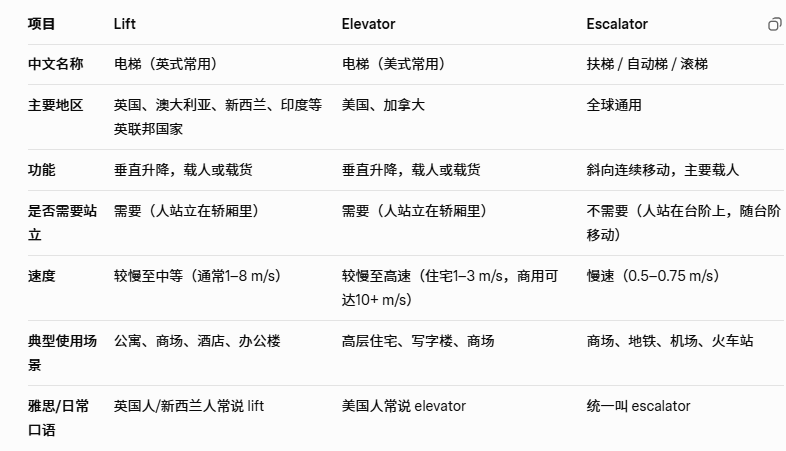
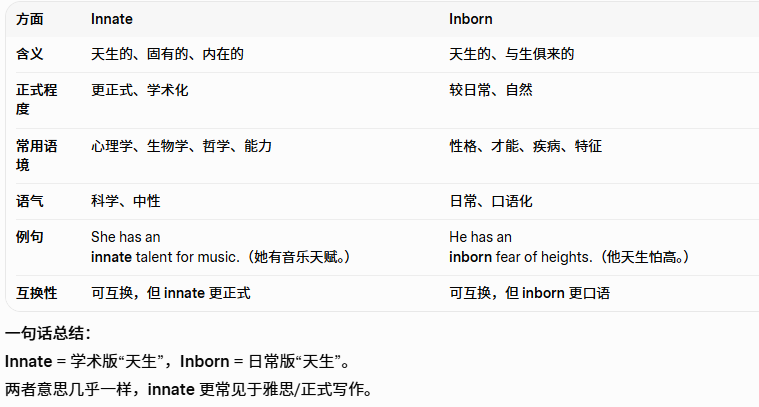

共 50 个词条 · 2 张附图（含音标截图）
pilot /ˈpaɪ.lət/ n.飞行员;试点adj.试点的v.驾驶;试验
The skilled pilot maneuvered （/məˈnuː.vər/精巧动作，策略；花招；巧计）the airplane safely through turbulent （/ˈtɜː.bjə.lənt/骚乱的，骚动的;动荡的，混乱的）weather conditions.熟练的飞行员驾驶飞机安全渡过了不稳定的天气环境。
an airline pilot 民航飞行员
a pilot study试验性研究
This weight, together with that of the fuel, pilot and four crew, approached the helicopter's maximum payload, and there were times when it was clearly right on the edge of the helicopter's capabilities.这个重量，再加上燃料、飞行员和四名机组人员，已接近该架直升机的最大承重量，有时载重量明显达到了飞机承重能力的极限。
medium /ˈmiː.di.əm/ adj.中等的;中号的n.方法,手段;媒介
The online medium is probably the most common way of conducting（组织；实施；进行；处理） business in the world today.线上媒体或许是当今世界最普遍的业务形式。
a man of medium height 一个中等身材的男子
average adj.平均的;中等的
media n.媒体
mass media 大众传媒
the current digital medium当前的数字媒介
barrel /ˈbær.əl/n.桶;一桶(的量);枪管
The distillery （/dɪˈstɪl.ər.i/烈酒生产厂家）stored the whiskey in oak（/əʊk/橡树，栎树;橡木，栎木） barrels, allowing it to age and develop rich flavours.酿酒厂将威士忌储存在橡木桶中，使其变陈并产生丰富口味。
a beer barrel啤酒桶
a wine barrel葡萄酒桶
oak barrels橡木桶
bubble /ˈbʌb.əl/ n.气泡,泡沫
The children blew （/bləʊ/吹;吹动;被吹走，吹响;吹奏，吹制（玻璃））soap bubbles, chasing（/tʃeɪs/追赶，追逐;追捕，跑来跑去;匆忙赶往） after them with sheer （/ʃɪər/ adj. 完全的，彻底的，陡峭的;近乎垂直的，（织物等）极薄的，透明的）delight（/dɪˈlaɪt/欣喜;满足;惬意）.孩子们吹着肥皂泡，兴高采烈地追逐着泡泡。
champagne bubbles香槟酒的泡沫
restrict /rɪˈstrɪkt/ v.限制;约束;限定
We restrict the number of students in each class to twelve, in order that each student gets a lot of teacher attention.我们将每个班的学生人数限制在12人以内，以使每个学生得到老师足够的关注。
restrict public access to the hills 限制公众进入山区
restriction n.限制;约束
superfluous /suːˈpɜː.flu.əs/adj.多余的;不必要的
To save on costs they are cutting out superfluous managers from the organisation.为了节省开支，他们正在裁掉组织中多余的管理者。
many superfluous belongings很多无用的物品
unnecessary adj.不必要的
impose /ɪmˈpəʊz/v.强加;强制实行
The authorities（/ɔːˈθɒr.ə.ti/当局；官方；当权者，威信；权力；管辖权） imposed new restrictions on vehicles so that they could reduce the air pollution in major cities.当局对车辆施加了新的限制，以减少大城市的空气污染。
impose additional financial burdens （/ˈbɜː.dən/负荷，重负，负担，重担；vt. 烦扰；加重压于）on many people 给很多人增加额外经济负担
border, boundary 边界
inaugurate /ɪˈnɔː.ɡjə.reɪt/ v.举行就职典礼;举行落成仪式;开始，开创
They celebrated the moon landing which inaugurated a new era in space exploration.他们庆祝登陆月球，这开创了太空探索的新纪元。
inaugurate as President in January于一月份就任总统
candidate /ˈkæn.dɪ.deɪt/ n.候选人;应试者
He was an ideal candidate for the job he was motivated（/ˈməʊ.tɪ.veɪt/ v.刺激，使有动机，激发）, dedicated （/ˈded.ɪ.keɪt/ v.致力于;奉献于 奉献，献出（全部精力、时间等））and highly skilled.他是这份工作的理想人选，他有上进心、敬业、技术熟练。
one of the leading candidates主要候选人之一
decompose /ˌdiː.kəmˈpəʊz/v.分解;腐烂，腐败
Organic （/ɔːˈɡæn.ɪk/有机的，不使用化肥的，生物的；有机物的，（疾病）器质性的，器官的，官能的）waste left in the open will decompose over time, returning nutrients（/ˈnjuː.tri.ənt/养分;营养物，滋养物） to the soil.留在露天的有机废物会随着时间的推移而分解，将营养物质归还给土壤。
be decomposed by microorganisms被微生物完全分解
compose v.组成;创作///这是反义词
renew v.更新;延长有效期;重新开始
In most countries every ten years you have to renew your driving licence.在大多数国家，每十年要更换一次驾照。
renew my passport续签护照
renewable adj.可再生的;可更新的 可再生能源 renewable energy .
transaction /trænˈzæk.ʃən/ n.交易,买卖,业务
The bank processed the financial transaction swiftly and securely, ensuring the funds were transferred.银行迅速而安全地处理了这笔金融交易，确保了资金的转移。
financial transactions between companies 公司之间的财务往来
commercial transactions商业交易
That is mainly because the costs of all this damage are what economists refer to as externalities（/ɪkˌstɜːˈnæl.ə.ti/外部性，对外影响）: they are outside the main transaction, which is for example producing and selling a field of wheat（/wiːt/小麦）, and are borne directly by neither producers nor consumers.这主要因为这些代价是经济学家们所说的"外部经济效应"，它们不在如生产或出售一块地里的小麦那样的主要交易过程之中，而且它们也不是由生产者和消费者直接来承担的。
jury /ˈdʒʊə.ri/ n.陪审团;评判委员会
Generally, the jury consisted of citizens from all walks of life.通常，陪审团由来自各行各业的公民组成。
members of the jury陪审团成员
contend /kənˈtend/ v.主张;竞争;处理,对付
The company was too small to contend against the growing competition.这家公司太小了，无法应对日益激烈的竞争。
have to contend with violence (/ˈvaɪə.ləns/暴力行为;激烈的言辞，猛烈;强烈) 需要应对暴力
maintain v.主张;认为
destiny /ˈdes.tɪ.ni/ n.命运，定数，天命
He believed strongly in destiny, and felt that things in life always turned out（发生） the way they were intended to, somehow（/ˈsʌm.haʊ/，一定程度上，以某种方法，以某种方式，不知什么原因）.他坚定地相信命运，觉得生活中的事情总会在一定程度上以它们想要的方式发生。
be in control of his own destiny掌握着他自己的命运
fate n.命运
exaggerate /ɪɡˈzædʒ.ə.reɪt/ v.夸张, 夸大
He didn't lie, but often he exaggerated the truth enormously（/ɪˈnɔː.məs.li/极其;非常）.他并没有说谎，但他经常对事实进行夸大。
exaggerate the difficulties 夸大困难
exaggeration n.夸大,夸张
detour /ˈdiː.tɔːr/ n./v. 绕道, 绕行, 迂回
Due to road construction, they had to take a detour to reach their destination.由于道路施工，他们不得不绕道到达目的地。
make a detour around the flooded fields 绕道避开被洪水淹没的田野
embryo /ˈem.bri.əʊ/ n.胚胎;胚芽;初期adj.胚胎的;初期的
At seven weeks old an embryo in the womb（/wuːm/子宫） is a recognisable human baby.七周大的胚胎在子宫里是一个可辨认的婴儿形象。
human embryos人的胚胎
the embryo of an idea 一种想法的雏形
Early embryos of many species develop ancestral（/ænˈses.trəl/祖先的，祖传的） features.许多物种的早期胚胎都具有祖先的特征。
engine /ˈen.dʒɪn/ n.引擎，发动机
Manufacturing （/ˌmæn.jəˈfæk.tʃə.rɪŋ/制造业）activities are the main engine of economic growth in the country.制造业活动是这个国家经济增长的主要引擎。
a steam engine 蒸汽机
concentrate /ˈkɒn.sən.treɪt/ v.集中(注意力);(使)浓缩
He always found it hard to concentrate on his studies during the summer it was hot and stuffy （/ˈstʌf.i/古板的，保守的，一本正经的，（房间或建筑物）闷的，通风不畅的，（鼻子）不通气的，堵塞的）and it made him feel tired and distracted.他发现在夏天总是很难集中精力学习，天气闷热，他感到疲惫，时常分心。
concentrate on聚焦于;集中于 centr=center，con=一起，都一起到了中心，就是聚焦，集中
concentrate resources on the most run-down areas把资源集中用于最衰败的地区
concentration n.集中;专注
Background noise in the classroom becomes a major distraction(/dɪˈstræk.ʃən/心烦意乱，苦恼无聊，分心的事；分散注意力的东西，娱乐，消遣), which can affect their ability to concentrate.背景噪音成了教室中的主要干扰，这会影响学生们集中注意力的能力。
splash /splæʃ/v.(液体)飞溅, 泼溅; 拍打戏水
The kids giggled as they played and splashed in the pool.孩子们在池塘里玩耍和戏水时发出阵阵笑声。splash around in the pool for a while 在水池里玩耍一会儿
nurture /ˈnɜː.tʃər/养育;培养;培植
It's important to nurture a sense of responsibility and social awareness （/əˈweə.nəs/意识）in children from a young age.从小培养孩子的责任感和社会意识是很重要的。
children nurtured by loving parents受到慈爱父母养育的孩子
Which do you believe has the strongest influence on how children develop—nature or nurture? 你认为哪一个对孩子的成长影响最大——先天条件还是后天教育？
foster v.培养 cultivate
escalate /ˈes.kə.leɪt/ v.加剧;增加; 增强
They engaged in high-level negotiations to avoid the conflict escalating.他们进行了高层谈判，以避免冲突升级。
the escalating costs of health care逐渐增加的医疗费用
escalator n.自动扶梯

architect /ˈɑː.kɪ.tekt/ n.建筑师;创造者，设计师
Along with civil engineers（/ˈsɪv.əl/文职的;民用的;平民的，国民的，民事的，有礼貌的;文明的;客气的 civil engineer特指土木工程师） and urban planners, architects are in great demand in the province at the moment.与土木工程师和城市规划师一样，目前建筑师在该省也有很大需求。
the principal architect 主设计师
emerge /ɪˈmɜːdʒ/v.出现;浮现;显露;兴起
The problems started to emerge after he started working with the new team.在他开始与新团队一起工作后，问题开始出现了。
emerged from the lake 从湖水中浮出来
emerging markets of South Asia正在兴起的南亚市场
emergency n.紧急状况，突发事件
Excellence does not emerge without appropriate help.没有恰当的帮助，很难成就优秀。
merge 合并
plague /pleɪɡ/n.瘟疫，传染病;灾害v.困扰,折磨
The deadly （/ˈded.li/ adj.致命的，致死的，adv. 完全地;极其）plague ravaged （/ˈræv.ɪdʒ/严重破坏；损坏；毁坏）the city, causing widespread fear and panic.致命的瘟疫在这座城市中肆虐，引起了广泛的担心和恐慌。
I thought she was joking but she was deadly serious.我原以为她在开玩笑，没想到她说的全是真的。
an outbreak （/ˈaʊt.breɪk/（尤指疾病、危险或不快之事的）发作，暴发，突然发生）of plague瘟疫的爆发
be under threat （/θret/威胁，恐吓。be under threat of something受到…的威胁）from a plague of rats 面临着鼠疫的威胁
arouse /əˈraʊz/ v.引起;唤醒;激发
He tried to arouse the students' interest in the subject by telling exciting stories.他试图通过讲述令人兴奋的故事来唤起学生对这门课的兴趣。
arouse one's interest 引|起某人的兴趣
arouse one's curiosity curious （/ˈkjʊə.ri.əs/好奇的;好打听的）引|起某人的好奇心
arousal /əˈraʊ.zəl/n.引起;唤起;激励
We're going to see a revival （/rɪˈvaɪ.vəl/（戏剧的）重演，复苏;复兴;重新流行）of that production, which aroused a lot of interest.我们将要看的是这出剧的新版演出，它引起了人们很大的兴趣。
improvise /ˈɪm.prə.vaɪz/ v.即兴创作；临时做
improviser /ˈɪm.prə.vaɪ.zər/ n. 临时发挥;即兴发挥，即兴表演者
With limited resources, she had to improvise and create a makeshift （/ˈmeɪk.ʃɪft/权宜的;临时代用的）shelter （/ˈʃel.tər/掩蔽（处）;遮蔽（处），躲避）in the wilderness.由于资源有限，她不得不在荒野中搭建了一个临时住所。
improvise a harness（/ˈhɑː.nəs/n.挽具;系带；vt. 给（马）上挽具） 临时做一副马具
A suggested method for transport engineers is to improvise design solutions and get instant feedback about how they would work from their own experience of them, or model designs at full scale in the way choreographers’（ /ˌkɒr.iˈɒɡ.rə.fər/编舞者;舞蹈设计者） experiment with groups of dancers.向交通工程师们建议一个方法:即兴给出一些设计方案，然后自己亲身去进行体验以获得即时的反馈，或者像舞蹈设计师用一群舞者来实验动作效果那样全方面地模拟设计方案。
elicit /iˈlɪs.ɪt/ v.引发，引起
The psychological（/ˌsaɪ.kəlˈɒdʒ.ɪ.kəl/心理的;心理学的） test uses a series of pictures to elicit responses from children.心理测试使用一系列图片来引发孩子们的反应。
elicit no response from him得不到他的回复
lifetime n.一生;寿命;有效期
Through hard work and determination （/dɪˌtɜː.mɪˈneɪ.ʃən/）he achieved an incredible amount in his lifetime.通过努力工作和决心，他一生中取得了令人难以置信的成就。
a lifetime of experience 毕生的经验
pledge /pledʒ/ n.誓言;保证，承诺v.保证;发誓
They made a solemn （ˈsɒl.əm/庄严的，严肃的）pledge to support each other through thick and thin.他们郑重承诺要同甘共苦互相支持。
a pledge that there will be no job losses this year保证今年不会削减工作职位
hedge 对冲
enormous /ɪˈnɔː.məs/ adj.庞大的，巨大的
She made enormous efforts to overcome her anxiety, but still needed counselling她做了巨大努力来克服焦虑，但仍然需要心理辅导。
an enormous amount of time大量的时间
dynamic adj.动态的;活动的n.动态;动力
He was a positive, dynamic and energetic（/ˌen.əˈdʒet.ɪk/精力充沛的;充满活力的） leader who loved innovation (/ˌɪn.əˈveɪ.ʃən/新观念;新方法;（新观念或方法的）创造，使用)projects.他是一个积极、有活力、精力充沛的领导者，喜欢创新项目。老师说，这几个都是很好的形容词，必须积累下来。
fluid （/ˈfluː.ɪd/ 液体;流质）dynamics 流体力学
group dynamics 小组互动
static adj.静止的
still adj.静止的
drastically /ˈdræs.tɪ.kəl.i/ adv.彻底地;剧烈地
In the past two years things have started to go drastically wrong with the economy.在过去两年间，经济出现了严重的问题。
reduce drastically显著减少
drastic adj.显著的
a drastic shortage of food食物的极度短缺
prospect /ˈprɒs.pekt/ n.前景;预期;将要发生的事;景色
The prospect of going to university in another country made him feel incredibly （/ɪnˈkred.ə.bli/难以置信地，极其）nervous.将要去另一个国家上大学这件事使他感到非常紧张。
an exciting prospect令人兴奋的前景
prospective adj.预期的;可能的
In order to encourage them to see that working in a hotel could be worthwhile and rewarding（老师说这2个词在大作文能用到）, with good prospects, they introduced a management programme.为了能让他们知道在酒店工作是值得的和有回报的，而且前景不错，他们引进了管理制度。
inject /ɪnˈdʒekt/ v.注入;注射
They injected him with a type of steroid （/ˈste.rɔɪd/ /ˈstɪər.ɔɪd/，注意，剑桥词典在英音里面都给了2个读音。类固醇）which helped the heart beat stronger and gave him energy and strength.他们给他注射了一种类固醇，使他的心脏跳动更有力，并带给他能量和力量。
be injected into the muscle 注射到肌肉里
injection n.注入;注射
When iron element was injected back into the affected trees, they immediately recovered.当铁元素被重新注入受影响的树的时候，这些树马上恢复了。
insert v. /ɪnˈsɜːt/插入，嵌入; 添加n. /ˈɪn.sɜːt/插页
Please insert your name and contact details into the online form provided.请将您的姓名及联络资料填入提供的网上表格中。
insert the thermometer插入温度计
microscope /ˈmaɪ.krə.skəʊp/ n.显微镜
The bacteria （/bækˈtɪə.ri.ə/ bacterium/bækˈtɪə.ri.əm/的复数形式）samples were taken to the laboratory（/ləˈbɒr.ə.tər.i/） and studied carefully under the microscope.细菌样本被送往实验室，在显微镜下进行细致研究。
look through（浏览，快速看）
a microscope at plant cells 在显微镜下观察植物细胞
library 图书馆——都忘了怎么写了
repertoire /ˈrep.ə.twɑːr/ n.全部节目;全部技能
The comedian had a fantastic （/fænˈtæs.tɪk/极好的）repertoire of jokes that he told with great confidence.这位喜剧演员有一整套绝妙的笑话，他讲这些笑话很有信心。
a pianist （/ˈpiː.ən.ɪst/）with a wide repertoire 一位能演奏很多曲目的钢琴师
build a repertoire of creative problem-solving skills具备创造性解决问题的能力
articulate adj./ɑːˈtɪk.jə.lət/ vt. /ɑːˈtɪk.jə.leɪt/ 明确表达;阐述清楚
He could not articulate himself pro明确表达; 阐述清楚楚
explain what was on his mind.他无法清晰得当地表达，来说明自己的想法。
articulate her thoughts表明她的想法
assemble /əˈsem.bəl/v.集合，聚集;装配，组装
They sell a lot of furniture that you have to assemble yourself at home.他们出售很多需要你自己在家里进行组装的家具。
assemble evidence 收集证据
assemble data 收集数据
A team there carefully assembled the 1,200 tonnes of steel, painstakingly（/ˈpeɪnzˌteɪ.kɪŋ.li/ adv精心地;悉心地，刻苦地） fitting the pieces together to an accuracy （/ˈæk.jə.rə.si/ n. 准确；精确；正确）of just10 mm to ensure a perfect final fit那里的团队仔细装配了1200吨钢铁部件，竭尽全力地以细致到仅为10毫米的精确度将零件组装在一起，以确保完美的最终合并。
assemble point 集合点
scene /siːn/ n.场面;场景;景象
She enjoyed the view of the magnificent scene of the waterfall through the windows.她很喜欢透过窗户看到的壮观的瀑布景色。
the scene of the accident 事故现场
innate /ɪˈneɪt/ adj.先天的;固有的;与生俱来的
There are some parenting skills which are surly innate, but many have to be learned and practiced.有些育儿技能显然是天生的，但很多仍然需要通过学习和实践获取。
the innate ability to learn 天生的学习能力
inborn adj.天生的
inherent adj.固有的;内在的

virtual /ˈvɜː.tʃu.əl/ adj.虚拟的;几乎的，实质上的
The city came to a virtual standstill when they hosted the football match.当他们举办足球比赛时，这座城市实际上陷入了停顿。
a virtual monopoly （/məˈnɒp.əl.i/垄断（机构）;专卖;独占）in this area of trade实质上垄断了这种贸易
virtually adv.实质上;实际上
pregnant /ˈpreɡ.nənt/ adj.怀孕的;富有意义的
An elephant is pregnant for usually eleven months before giving birth.大象在生产前通常会怀孕11个月。
be pregnant with the third child 怀了第三个孩子
pregnancy n.怀孕
diversity /daɪˈvɜː.sə.ti/ n.多样性;差异 老师说这个词非常重要
Globalisation has brought about the need for us to embrace diversity, as cities become increasingly cosmopolitan.随着城市变得越来越国际化，全球化趋势使我们需要拥抱多样性。
the biological diversity of the rainforests 热带雨林的生物多样性
biodiversity n.生物多样性
diversify v. 使多样化
Because of their tremendous breeding potential and genetic diversity, many pests are known to withstand（/wɪðˈstænd/经受;承受;顶住） synthetic chemicals and bear offspring with a built-in resistance to pesticides（/ˈpes.tɪ.saɪd/ n.杀虫剂，农药）.由于它们巨大的繁殖潜力和遗传多样性，人们知道很多害虫可以抵抗合成化学物，并且能够繁衍具备天生抗杀虫剂特质的后代。
abuse n. /əˈbjuːs/（尤指出于个人私利的）滥用;妄用 vt. /əˈbjuːz/滥用;虐待，伤害
Verbal abuse can be as bad as physical abuse and can lead to psychological problems.言语虐待可以和身体虐待一样糟糕，并能够导致心理问题。
drug abuse 嗜毒
alcohol abuse 酗酒
insult v.侮辱;辱骂
consignment /kənˈsaɪn.mənt/ n.委托;运送;装运的货物
In preparation for the annual office gala（/ˈɡɑː.lə/庆典，盛会，演出） performance, the director ordered a huge consignment of decorations.为了准备一年一度的办公室晚会表演，导演订购了一大批装饰品。
a consignment of medicines运送的一批药物
nourish /ˈnʌr.ɪʃ/v.滋养，养育;培养，助长
Vitamin A and vitamin D nourish and protect the skin.维生素A和维生素D能滋养和保护皮肤。
nourish the talents of our children 培养孩子的才能
More recently, we have found that indiscriminate （/ˌɪn.dɪˈskrɪm.ɪ.nət/不加思考的，未加计划的，任意的（尤指带来不良后果））use of fertilisers hurts the soil itself, turning it acidic （/əˈsɪd.ɪk/酸性的）and salty, and degrading the soil they are supposed to nourish.最近，我们发现滥用化肥对土壤本身也有很大伤害，使其变成酸性且含盐度高，并且使那些本想被其滋养的土壤出现退化。
regulate /ˈreɡ.jə.leɪt/v.调节;管理;规定 可以拿control来替换
Governments often introduce policies to regulate financial markets, so that they do not spiral（/ˈspaɪə.rəl/（价格等的）不断下降;（局面的）迅速恶化;螺旋式恶性下滑） out of control.政府经常出台政策来调节金融市场，从而使其运转不要失控。
regulate the temperature of the room 调节室内温度
regulation n.规则;控制;管理
regulate our immune （/ɪˈmjuːn/免疫的，不受影响的）systems 调节我们的免疫系统